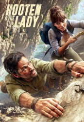

")
 
 IMDB-Wertung: 7.3 / 10
IMDB-Wertung: 7.3 / 10  Metascore:
Metascore: 
Durch Zufall laufen sich die adelige britische Wissenschaftlerin Alexandra und der raubeinige US-Schatzsucher Hooten im Amazonas-Dschungel über den Weg. So ungleich die beiden auch sein mögen, als Abenteurer-Duo auf der Suche nach verborgenen Schätzen harmonieren die beiden blendend. Auf ihrer abenteuerliche Suche nach legendären Orten und Schätzen wie El Dorado oder dem verschollenen Sarg von Alexander dem Großen scheint es zwischen ihnen auch ordentlich zu knistern...
Jahr: 2016
Dauer: 45 Minuten
FSK:
Land: England Studio: Sky VisionTonspuren: DD5.1 - ,
Untertitel:
Auflösung: 720p (960x718) Größe: 128000 MB
Regisseur: Justin Molotnikov, Daniel O'Hara, Colin Teague, Andy Hay, Julian Holmes
Drehbuch: Ian Edelman
Soundtrack:
Darsteller:
 Michael Landes als Hooten
Michael Landes als Hooten Ophelia Lovibond als Lady Alex Spencer-Parker
Ophelia Lovibond als Lady Alex Spencer-Parker Shaun Parkes als Clive Stephenson
Shaun Parkes als Clive Stephenson Jessica Hynes als Ella Bond
Jessica Hynes als Ella Bond Jonathan Bailey als Edward
Jonathan Bailey als Edward Jane Seymour als Lady Lindo-Parker
Jane Seymour als Lady Lindo-Parker Kierston Wareing als Mrs. T
Kierston Wareing als Mrs. T David Ajala als Dawit
David Ajala als Dawit Manuel Cauchi als Professor Gohar
Manuel Cauchi als Professor Gohar Kenneth Fok als Dao
Kenneth Fok als Dao Olivia Grant als Valeria
Olivia Grant als Valeria Anton Lesser als Hercules
Anton Lesser als Hercules Colin McFarlane als Caleb
Colin McFarlane als Caleb Vincent Regan als Kane
Vincent Regan als Kane Blake Ritson als Dr. Yannaras
Blake Ritson als Dr. Yannaras Jenna Saras als Female Guest
Jenna Saras als Female Guest Joanna Scanlan als Penny McQuinn
Joanna Scanlan als Penny McQuinn Vere Tindale als Russian Groom
Vere Tindale als Russian Groom Joe Vaz als Tufty
Joe Vaz als TuftyDatei: X:\HD-Serien\Hooten and The Lady S01\Hooten and The Lady S01E01 Abenteuer im Amazonas.mkv seit 13.02.2017
Festplatte: HD Serien(A-H)
 Es gibt insgesamt 182 Filme in der Gruppe 'HD-Serien'
Es gibt insgesamt 182 Filme in der Gruppe 'HD-Serien'